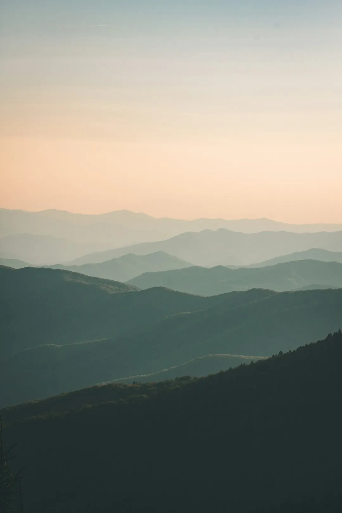

Mendocino County Road Trip: Bluffs, Wine & Seaside Towns
· By GoldenPath Guide Editorial Team
Head north from San Francisco and, two hours or so later, the world opens up. Mendocino County feels like a different country — open farmland, untouched coastline, and a pace closer to home than to the city. Two days is enough to take in the vineyards, the goats, the hidden coves, the redwood forest and the windswept bluffs that make the North Coast so memorable.
Day One: Anderson Valley & the Backroads
Start on State Route 128 in the south of Sonoma County and roll north into the Anderson Valley wine country, where every hillside holds pasture and vineyard. In little Boonville, stop at Pennyroyal Farm to meet the goats and their kids, then relax on a vineyard-view patio with a cheese and wine pairing. Half a mile on, Farmers Mercantile is a treasure trove of rustic home goods. Just up the road, Baxter Winery in Philo pours single-vineyard Pinot Noir for a deeper tasting.
1,000-Year-Old Redwoods Meet the Sea
Before dusk, head to Hendy Woods State Park. Two groves of 1,000-year-old redwoods anchor the park, with a 5-mile trail and a stroller-friendly Discovery Trail. In summer, the Navarro River offers swimming and picnic spots, and a campground nestled among the trees makes a delightful night under the stars.
Where Route 128 meets Highway 1 and the Navarro River spills into the Pacific, the scenery turns dramatic. The Harbor House Inn — an Arts and Crafts-style lodge in Elk — sits perched on a bluff above Casket Rock, its ocean-view rooms greeting you with a morning of white surf.
Day Two: Highway 1 & Old Town Mendocino
The 17-mile stretch from Elk to Mendocino is the scenic centerpiece, running tight above the Pacific with wind-carved cliffs, hidden beaches and wildflower meadows rolling past. At Little River, pause at Van Damme State Park to step down to the beach or walk the fern and pygmy-forest trails.
Old Town Mendocino
Three times transformed — from lumber camp to fishing village to artist colony — Old Town Mendocino is a designated historical landmark preserved in its old form. Steep gabled roofs, bay windows and a romantic New England-style streetscape line up along galleries and lovely shops. Treat yourself to a handmade truffle from Mendocino Chocolate Company, lunch at garden-surrounded Trillium Café, then head to Headlands State Park for its 4-mile coastal trail and a sunset over the bluff. The park’s 347 acres of cliffs, sand, and offshore rocks squeeze sea and sky into one frame.
Sweetness of wine, salt of the sea, and the deep shade of forest trade places day by day along this route. Here, more than anywhere, it pays to go slow.
Glass Beach, Headlands and Gardens
Fort Bragg's Glass Beach rewards low tide: decades of tumbled sea glass still glitter in the coves below the former dump site, and the best pieces hide at the north end past the main stairs — collecting is discouraged now, so photograph and leave. Entry is free; the parking lot fills by noon on summer weekends. Mendocino Headlands State Park wraps the village with two miles of cliff trails past sea arches and sea caves, free and walkable in 90 minutes. The Mendocino Coast Botanical Gardens in Fort Bragg charges about $20 for adults and spans 47 acres from manicured beds to ocean bluffs — the rhododendron bloom peaks April and May, dahlias run August through October. Point Cabrillo Light Station, a half-mile walk from its $5 parking area, tours the restored 1909 lighthouse and keeper's quarters. Kayak Mendocino's sea-cave tours run $70 to $90 for 2.5 hours through arches local fishing boats once worked.
Anderson Valley Tastings and Farm Stops
Highway 128 through Anderson Valley packs a dozen tasting rooms into 15 miles. Navarro Vineyards pours its famous Gewürztraminer flights near $25 with the fee waived on purchase; Roederer Estate's sparkling flights run $30 to $40 on the terrace. Baxter Winery in Philo pours single-vineyard Pinot Noir flights near $35 — reserve the seated tasting a day ahead on weekends. Pennyroyal Farm pairs goat-cheese plates ($20 to $30) with vineyard views and twice-daily goat visits kids remember. The Boonville General Store and Farmers Mercantile sell picnic supplies; assemble lunch under $20 and eat it at Hendy Woods among the redwoods. Most rooms cluster tastings 11 a.m. to 5 p.m.; designate a driver, since the valley's curves punish less. Skip the valley on Memorial Day weekend, when the Pinot Festival doubles tasting-room traffic — any other May weekend pours the same wines.
Where to Sleep and Eat on the Coast
Mendocino village inns run $200 to $350 a night, many with ocean-view fireplaces and breakfast included; book six to eight weeks out for summer weekends. Fort Bragg motels run $140 to $200 with harbor views and walkable seafood dinners — the Noyo Harbor fish houses serve crab sandwiches and chowder bowls at $15 to $25. Little River's inns near $250-plus offer the quietest bluff settings. Dinner reservations matter: the village's destination dining rooms seat two seatings a night at $75 to $120 per person and sell out weekends a month ahead; the pub-style alternatives take walk-ins. Breakfast at the village bakeries runs $10 to $15 with coffee. Fog peaks July and August — pack fleece and expect 60-degree afternoons while inland valleys bake at 90. Gas up in Ukiah or Willits before the coast; Highway 1 stations charge $1-plus premiums.
All Destinations
The Ultimate California Road Trip
Redwood National & State Parks